第1部
13:30〜15:00
パネルディスカッション
「博士課程、その先のキャリア」
大阪大学まちかね祭 1日目
あなたの知らない博士の世界
2026年11月1日（日）10:00〜18:15
大阪大学 豊中キャンパス基礎工学国際棟 シグマホール
常設企画｜10:00〜18:15
あなたはどんな研究者？
研究への向き合い方や考え方は、人それぞれ。興味と志向から、自分らしい研究スタイルを見つけてみよう！
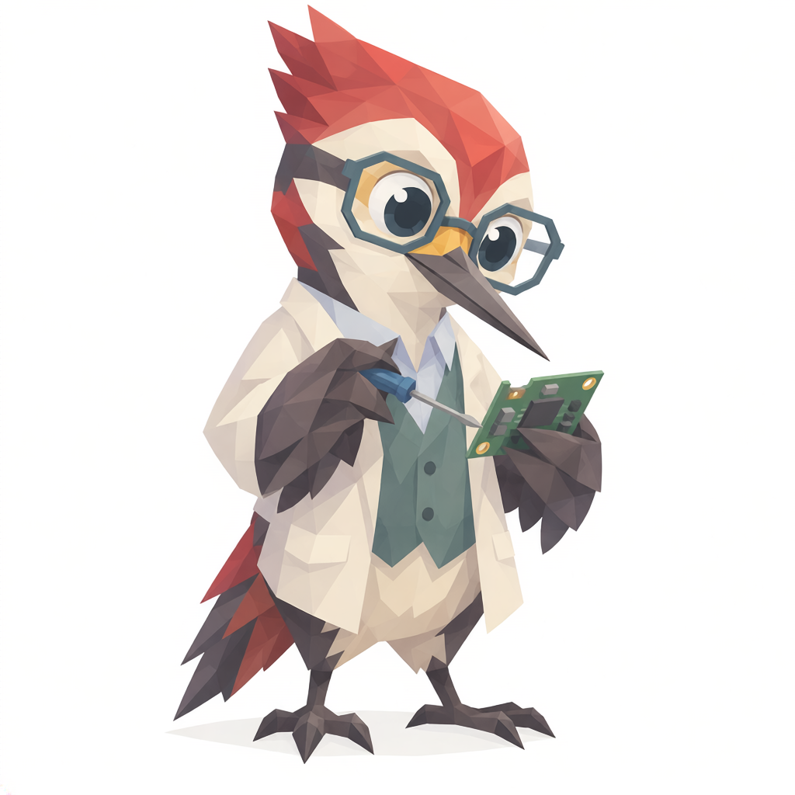
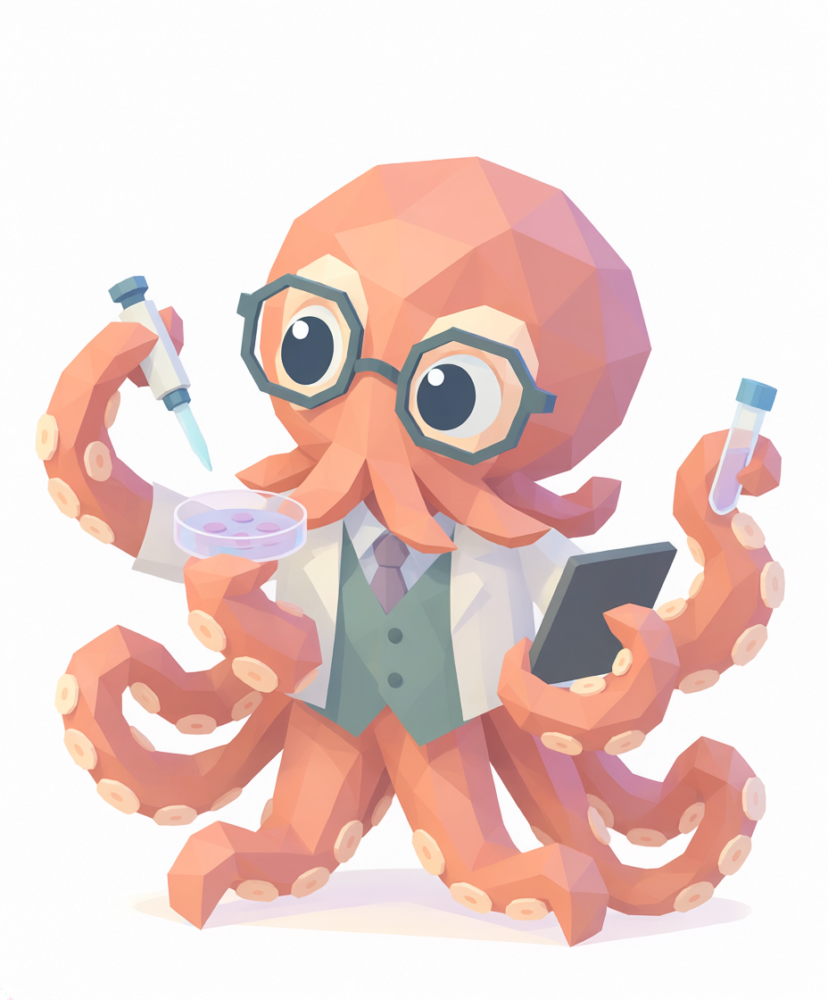
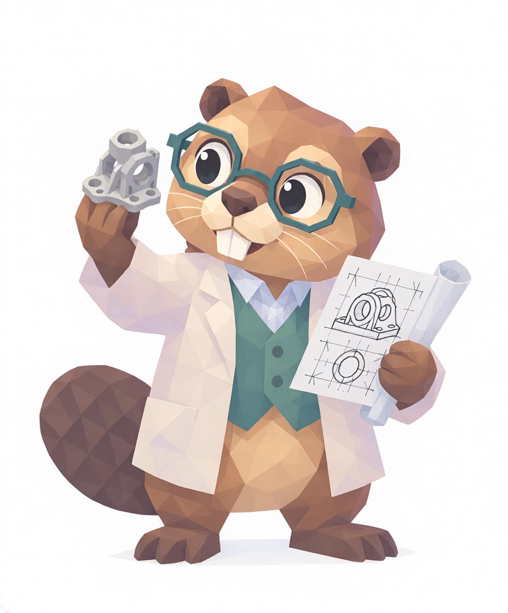
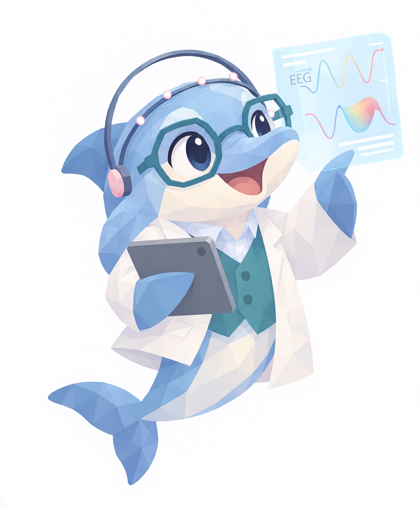
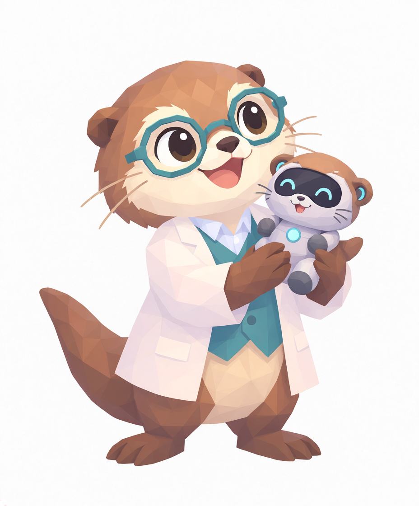
EVENT OVERVIEW
MAIN PROGRAM
第1部
13:30〜15:00
「博士課程、その先のキャリア」
第2部
15:30〜16:30
「研究から広がる、新しいつながり」
PANEL DISCUSSION
「博士課程、その先のキャリア」
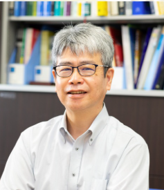
大阪大学大学院情報科学研究科 バイオ情報工学専攻 教授
大阪大学学際大学院機構「ヒューマンウェアイノベーション学位プログラム」コーディネーター
1990年、京都大学大学院工学研究科化学工学専攻にて工学博士を取得。同年、大阪大学工学部醗酵工学科助手に着任。1996年6月から1997年6月までMIT客員研究員を務め、2003年4月より大阪大学大学院情報科学研究科バイオ情報工学専攻教授。微生物によるものづくりに資する代謝工学研究に従事している。
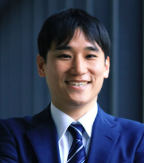
NTTコミュニケーション科学基礎研究所 研究主任
2019年、大阪大学大学院生命機能研究科博士課程修了。HW2期生。同年、日本電信電話株式会社（現NTT株式会社）入社。eスポーツを中心に、実戦環境におけるアスリートの「勝てる脳状態」を研究している。NEDO事業の採択審査委員を務めるほか、NTT出版のウェブメディア「DISTANCE.media」などでeスポーツ研究の解説も行っている。
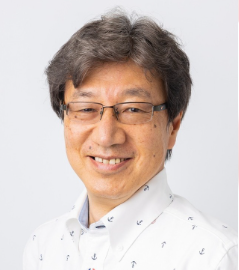
元 パナソニックホールディングス株式会社 技術部門
全社技術コーディネータ、研究所技術総括・マネージャ等を歴任
早稲田大学理工学部卒業後、松下電器産業中央研究所へ。家電向けコンピュータアーキテクチャ、大規模システムLSIを研究開発。90年代はDVD用LSI、2000年代は「UniPhier」を立ち上げ、DTV・携帯電話等の開発効率向上に貢献。以後、IoT家電・人理解技術を開発。社内技術塾、大学非常勤講師、博士課程アドバイザーなど人材育成・採用も担当。工学博士（大阪大学大学院情報科学研究科）。
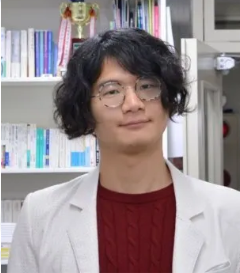
株式会社tayo 代表取締役
2018年、東京大学大気海洋研究所にて博士(環境学)を取得。専門は海洋微生物学とバイオインフォマティクス。博士号取得後は株式会社フリークアウトにて機械学習エンジニアとして勤務。その後、国立研究開発法人海洋研究開発機構に移り深海微生物学者として研究する傍ら、2019年5月に株式会社tayoを設立、2021年7月に専業化。
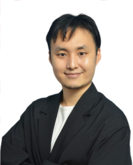
エピストラ株式会社取締役CTO、千葉大学特任准教授
静岡県出身。大阪大学理学部生物学科を卒業後、大学院を休学して起業するも失敗し無職に。インドなど世界各国放浪を経て、エピストラ創業へ参画。経営の傍ら大学院に復学し、2026年に大阪大学大学院で博士（工学）を取得。学位記受領代表を務めた。現在は、AIとロボットが自律的に実験を回し、人の発想を超える科学的発見を生み続けるシステムの研究開発に取り組む。第7回IP BASE AWARDスタートアップ部門グランプリ受賞。
TIMESCHEDULE
| 10:00 | 常設企画 START |
|---|---|
| 13:15 | 開会・プログラム紹介 |
| 13:30〜15:00 | パネルディスカッション |
| 15:30〜16:30 | ポスター発表・交流会 |
| 16:45 | 閉会 |
| 18:15 | 常設企画 CLOSE |
ABOUT HWIP
情報科学研究科・基礎工学研究科・生命機能研究科の学生が、自分たちの専門領域を超えた融合研究に取り組むプログラムです。異分野の学生との共同研究を通じて研究者としての視野を広げることを目指しています。また、起業・海外インターンシップ支援やメンター制度、研究活動支援、給付奨学金などの学生支援も充実しており、研究に専念できる環境が整備されています。ぜひ本シンポジウムでヒューマンウェアの理念を体感してみませんか?
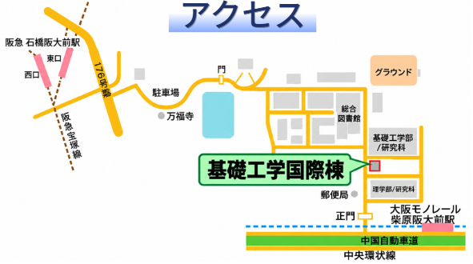